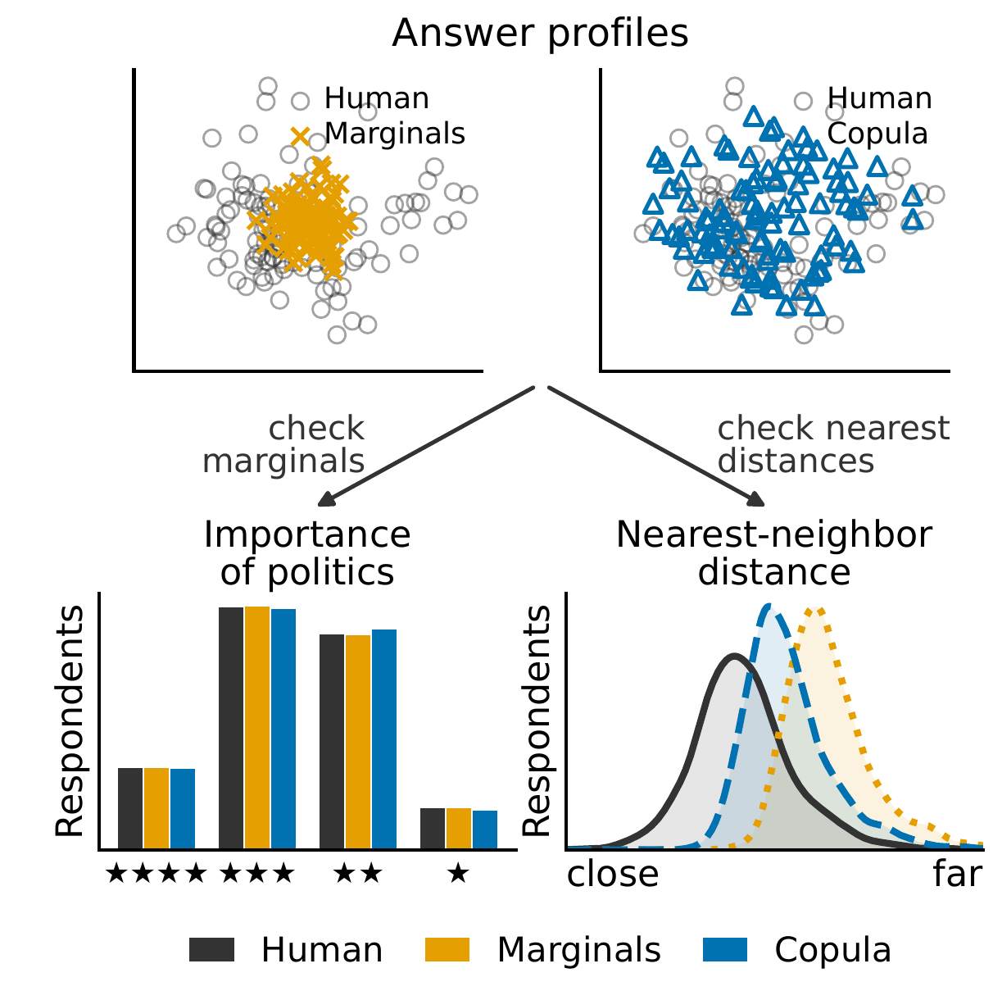
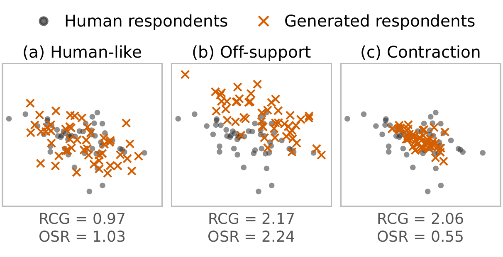

Silicon sampling generates survey respondents by having a large language model (LLM) answer a survey as a person with given demographic attributes, and the resulting synthetic populations are increasingly used in place of human ones. Existing evaluations focus on individual-answer accuracy, per-question answer distributions, and correlations across questions. None of these compares the respondents themselves, so a generator whose respondents have combinations of answers found in no human respondent can still score well if it reproduces every answer distribution. We propose the respondent coverage gap (RCG), which represents each respondent as a point defined by their complete answer profile and measures how far each human respondent is from the nearest generated one, relative to the distance between human samples. On two US social surveys, all six LLMs we evaluate leave human respondents uncovered, and under our main settings, they fall behind a baseline that samples each answer independently from the human marginals. Across the prompting and inference settings we test, every LLM has a higher RCG than a Gaussian copula fitted to the human data.
We propose the respondent coverage gap (RCG), a metric of how well a synthetic population covers the respondent distribution of a human population. We treat each answer profile as a point and measure, from each human point, the distance to the nearest generated point; this directly quantifies how close each human respondent is to a generated respondent. Because this distance depends on the number of questions and the size of the populations, we normalize it by the same distance measured among the human points themselves. The reference is another human sample rather than the human respondents themselves: a synthetic population should not copy the human respondents but resemble them as a population. A ratio of one means the synthetic population is as close to the human respondents as another human sample would be; the more it exceeds one, the farther the least covered human respondents are from any generated respondent.
A respondent is represented as an answer vector \(\boldsymbol{u} = (u_1, \ldots, u_M)\), where \(u_m\) is the answer chosen for question \(q_m\). We write \(\mathcal{H}\) for a set of human answer vectors and \(\mathcal{G}\) for a set of generated answer vectors. Given a distance \(d(\boldsymbol{u}, \boldsymbol{v})\) between answer vectors, let \(\delta(\boldsymbol{u}; \mathcal{S})\) be the distance from an answer vector \(\boldsymbol{u}\) to its nearest neighbor in a set \(\mathcal{S}\). We define RCG and its reverse-direction companion, the off-support ratio (OSR):
\[ \begin{aligned} \mathrm{RCG}(\mathcal{H}, \mathcal{G}) &= \frac{d^{95}_{\mathcal{H} \to \mathcal{G}}}{d^{95}_{\mathcal{H} \to \mathcal{H}}}, \\ \mathrm{OSR}(\mathcal{H}, \mathcal{G}) &= \frac{d^{95}_{\mathcal{G} \to \mathcal{H}}}{d^{95}_{\mathcal{H} \to \mathcal{H}}}, \end{aligned} \]
where \(d^{95}_{\mathcal{H} \to \mathcal{G}}\) is the 95th percentile of \(\delta(\boldsymbol{u}; \mathcal{G})\) over the human respondents \(\boldsymbol{u} \in \mathcal{H}\) (cf. directed Hausdorff distance), \(d^{95}_{\mathcal{G} \to \mathcal{H}}\) is the 95th percentile of \(\delta(\boldsymbol{v}; \mathcal{H})\) over the generated respondents \(\boldsymbol{v} \in \mathcal{G}\), and \(d^{95}_{\mathcal{H} \to \mathcal{H}}\) is the 95th percentile of the distances from each human respondent to their nearest other human respondent. RCG measures the extent to which human respondents are left uncovered by the generated ones; OSR reverses the direction of the numerator while keeping the same denominator, and thus measures the extent to which generated respondents lie outside the support of the human respondents. Since \(\delta(\boldsymbol{u}; \mathcal{S})\) shrinks as \(\mathcal{S}\) grows, we use equally sized \(\mathcal{H}\) and \(\mathcal{G}\) in our main evaluation.
Both ratios are expected to be near one when \(\mathcal{G}\) is an independent sample of human respondents. \(\mathrm{RCG} > 1\) indicates undercoverage of human respondents, whereas \(\mathrm{OSR} > 1\) indicates generated respondents unusually far from the human sample (off-support). A low OSR is not necessarily better: when \(\mathrm{RCG} > 1\) but \(\mathrm{OSR} < 1\), generated respondents stay close to some human respondents while leaving others poorly covered (contraction). Figure 2 illustrates these patterns: the off-support and contraction examples have similar RCG values (2.17 and 2.06), but their OSR values lie on opposite sides of one (2.24 and 0.55).

@article{kumagae2026silicon,
title = {Silicon Samples Match the Answers but Not the Respondents},
author = {Kumagae, Yusuke and Kaneko, Masahiro},
journal = {arXiv preprint arXiv:2610.30900},
year = {2026},
eprint = {2610.30900},
archivePrefix = {arXiv},
primaryClass = {cs.CL},
}